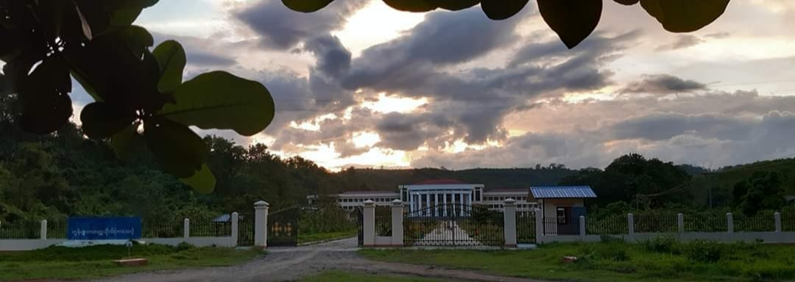
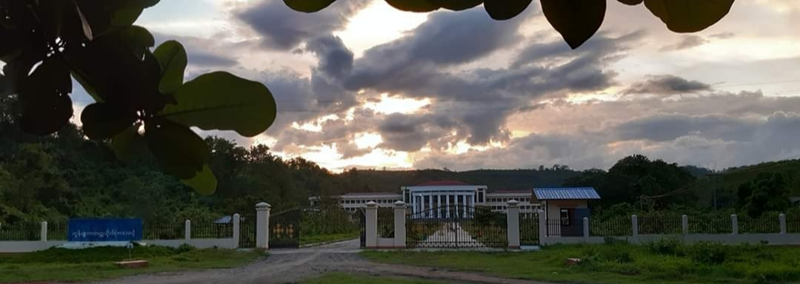

Our Objectives
It is envisaged that YTU will become a highly-prestigious technological centre of excellence in teaching and research with a strong commitment to systematically educate and train
Our Missions
To educate and train students systematically to become engineers, specialists and researchers who can effectively contribute to the building of a modern developed nation
Programs
when an unknown printer took a galley of type and scrambled it to make a type specimen book. It has survived not only five centuries, but also the leap into electronic typesetting,